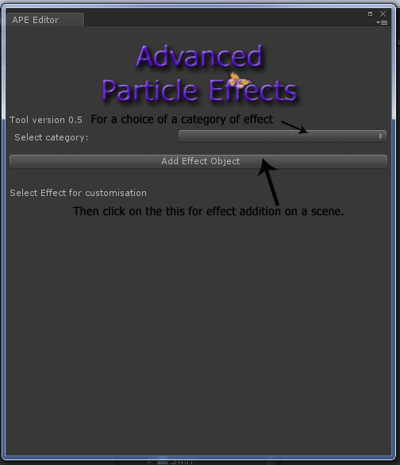

| Documentation v 0.5 |
| Navigation: Table of Content -> Getting Started |
|
At first you should view Troubleshooting page For effect adding, you first go to the menu: Tools -> AnBytes -> APE Editor. Then you will see this window:  You need select category. Maybe you will need select subcategory. Then click on the button "Add Effect Object" for adding effect on a scene. You are now ready to customize the selected effect. Select Effect in the Hierarchy. Attention: don't change prefix APE_ in the name of effect. Then you will see all parameters of the selected effect: Back |